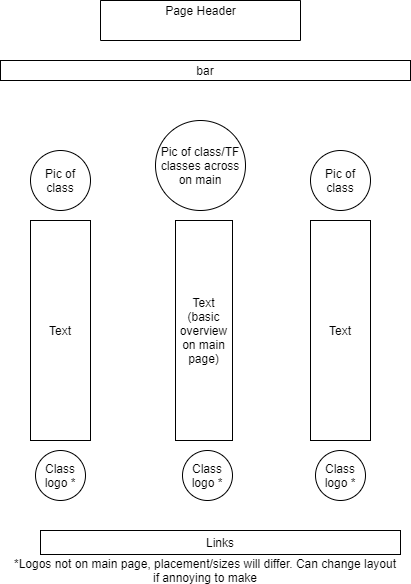
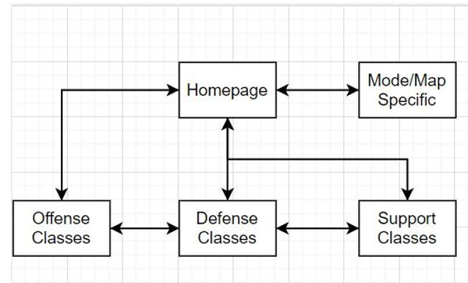

The application I will be designing is a website for viewing information and potential strategies for the different classes in the video game Team Fortress 2.
The intended users of the website are players of Team Fortress 2 who want to know more about the classes they play and get ideas for how to play them.
The content of the website will be pages for each class category (Offense, Defense, and Support), with each containing information on the classes in the respective category.
Client Information
Client Name: Ryan Braswell
Organization: Himself
Client Email: rbraswe1@uncc.edu
Client Phone Number: [private]
Site Wireframe

Sitemap

Page Design
Homepage
Purpose: Brief introduction of the site's content and purpose.
Audience: Those interested in Team Fortress 2.
Content: Brief overview of the game, the purpose of the site, and the class types.
User input: None
Validation: None
Buttons, etc.: Links to the subpages
Page actions: Links will take the user to each subpage
Offense Classes
Purpose: Offer basic guidelines on how to effectively use each of the three classes in the Offense catagory
Audience: Those interested in any of the three classes in said catagory
Content: Introduction of the class and its role, as well as how to effectively play as said class to support the team.
User input: None
Validation: None
Buttons, etc.: Buttons to change content, links
Page actions: Button will change content and text to the specific class. Links to main page and next catagory.
Defense Classes
Purpose: Offer basic guidelines on how to effectively use each of the three classes in the Defense catagory
Audience: Those interested in any of the three classes in said catagory
Content: Introduction of the class and its role, as well as how to effectively play as said class to support the team.
User input: None
Validation: None
Buttons, etc.: Buttons to change content, links
Page actions: Button will change content and text to the specific class. Links to main page and next catagory.
Support Classes
Purpose: Offer basic guidelines on how to effectively use each of the three classes in the Support catagory
Audience: Those interested in any of the three classes in said catagory
Content: Introduction of the class and its role, as well as how to effectively play as said class to support the team.
User input: None
Validation: None
Buttons, etc.: Buttons to change content, links
Page actions: Button will change content and text to the specific class. Link to return main page.
Map Specifics
Purpose: Give more general advice relating to effectively playing some of the most popular maps in the current pool.
Audience: Those interested in additional information for map specific advice.
Content: General advice for playing on certain maps, with around 3-5 in total represented.
User input: None
Validation: None
Buttons, etc.: Buttons to switch content, links
Page actions: Button will switch which map is currently "on display", and the text content for it. Link to return to main page.
Dynamic Functionality: Some of the interactive features this website will contain are: Buttons that link to other pages, as well as buttons on the three class pages to change the main text block to the specific class in question. Additionally, for the Specifics page a button can potentially be used to toggle content.